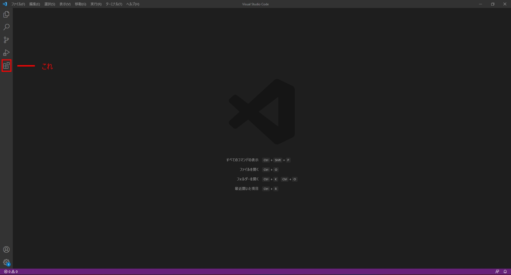

明日からイキれる！HTML入門！
テキストエデュタ編
テキストエデュタとは？
テキストエデュタって言うのはプログラミングを書くアプリみたいなやつ。
実はWindowsのメモ帳もそうだったりする。
でもみんながわざわざ別のところからインストールする訳はその方が拡張機能とか入れられて便利だから。
おすすめのテキストエデュタ
おじさん的にはVisual Studio Codeがおすすめ。
ちなみにVisual Studio CodeはVScodeとも呼ばれたりする。
おじさんは拡張機能が気持ちいいから使ってるよ。
VScodeはパソコンでしか入れられないから注意ね。
VScodeのダウンロードページ
VSCODEをインストールした後
まず左下の四角形が四つあるアイコンをクリックして「Japanese Language Pack for Visual Studio Code」と打ち込む
一番上に出てきたMicrosoft社が出してる拡張機能をクリックしたらインストールボタンをクリック。
インストールが完了したら本体を再起動してVSCODEを開く。
なんということでしょう。VSCODEが日本語になっているではありませんか！
拡張機能の場所

コードの書き方
コードの書く場所の設定
① まずデスクトップを右クリックして「メニュー」を出す。
② ①で出した「メニュー」から「新規作成」を選択。
③ ②で出した「新規作成」のメニューから「フォルダー」を選択する。
④ 適当にフォルダーの名前を半角で設定する。(全角の日本語でも出来るが、稀に設定が反映されなかったりする為、念のために半角でネーミングする。)
⑤ VSCODEを開き、左上の「ファイル」をクリック。
⑥ ⑤から展開されたメニューから「フォルダーを開く」をクリック。
⑦ ④で作成したフォルダーを選択し、「フォルダーの選択」をクリックする。見つかりにくい場合は「クイックアクセス」から「デスクトップ」を選択して探す。
⑧ 新しいウィンドウが出たら、デフォルトで開かれている「作業の開始」タブをタブの右端にある×マークをクリックして消す。
コードの書く場所を作成
① 開いているエデュターの下にある項目にカーソルを合わせ、左から二番目の「新しいフォルダー」を選択する。
② 出てきたテキストボックスに「index.html」と打ち込み、エンターキーを押す。
③ つぎに①の操作をもう一度行い、テキストボックスに今度は「style.css」と打ち込み、エンターキーを押す。